← Index · ← Previous · Next →
Authors: Sanjiang Li
Type: theory · Category: quantum information and computing · PDF: https://arxiv.org/pdf/2605.21960v1
Analysis basis: full PDF text, analyzed in chunks
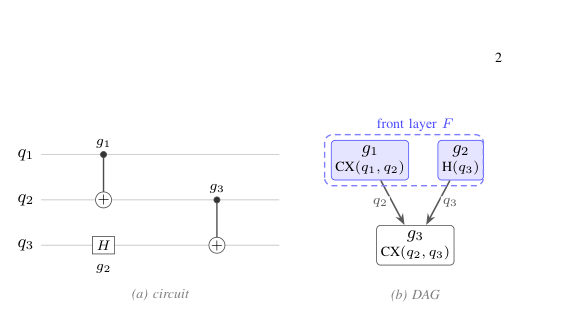
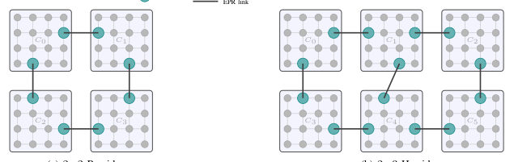
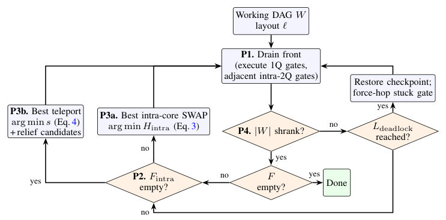
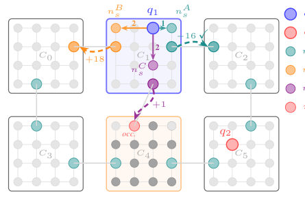
Summary. The paper presents dSABRE, a new routing algorithm designed to optimize circuit execution on distributed quantum computers. By specifically addressing core congestion and optimizing the cost of inter-core entanglement, it significantly reduces the number of required EPR pairs compared to existing methods. This is crucial for scaling quantum computing architectures where remote entanglement is a bottleneck.
Why it may be interesting. not directly relevant
Main problem. Minimizing the consumption of EPR pairs and intra-core SWAP operations when routing quantum circuits on a multi-core distributed quantum computer (DQC).
Main result. The dSABRE router reduces geometric-mean EPR consumption by 41-44% over TELESABRE and 16-68% over pytket-dqc, demonstrating high scalability up to 360 qubits.
Method. A SABRE-style, lookahead-driven routing algorithm using a five-term gate-centric teleportation score, a proactive congestion-relief mechanism, and a BFS-layer construction for the inter-core extended set.
Model / system. A multi-core distributed quantum architecture consisting of multiple small quantum processing units (cores) interconnected via EPR links, modeled as a weighted graph with high-cost inter-core edges.
Key observables. Geometric-mean EPR consumption, intra-core SWAP costs, and inter-core teleportation costs.
Important parameters / regimes. SWAP cost (c_swap), teleportation cost (c_tele), capacity penalty (c_cap), lookahead decay parameter (gamma), and core capacity/demand thresholds.
Assumptions / limitations. Assumes the initial layout and communication-primitive selection stages are handled by other parts of the compilation pipeline; assumes a fixed grid-of-grids topology.
Figures summary. Figure 1 shows a circuit representation; Figure 3 illustrates the dSABRE routing workflow; Figure 4 provides a running example of inter-core teleportation scoring on an H-grid; Table I details scoring for specific candidates.
Paper structure. The paper introduces the routing problem, describes the dSABRE algorithm and its scoring mechanisms, presents ablation studies to validate individual components, compares performance against state-of-the-art baselines, and demonstrates scalability via large-scale QFT circuits.
Minimising EPR consumption is the dominant objective when routing a quantum circuit on a distributed quantum computer (DQC). We present dSABRE, a SABRE-style router for multi-core processors that, on each iteration of a lookahead-driven loop, first resolves any intra-core front-layer gates by SWAP scoring and only falls back to scoring inter-core teleportation candidates when the intra-core front is empty. Three mechanisms drive the improvement over the state of the art: a five-term gate-centric teleportation score that generalises the local SWAP heuristic to the inter-core setting, whose explicit capacity-penalty term keeps the scorer from teleporting into saturated cores; a proactive congestion-relief pass that redistributes idle qubits out of high-demand cores before deadlock; and a BFS-layer construction of the inter-core extended set that respects DAG dependencies layer by layer rather than mixing wires in topological order. Across 18 MQT-Bench circuits at 25, 36, and 64 logical qubits, dSABRE reduces geometric-mean EPR consumption by 41-44% over TeleSABRE and by 16-68% over the gate-teleportation-based pytket-dqc, using standard Qiskit SabreLayout for the initial layout. A large-circuit QFT sweep at 100-360 qubits confirms scalability. Code and online appendices are available at https://github.com/ebony72/dsabre.
Authors: Takumi Shirasaki, Taichi Ishikawa, Shungo Nakayama, Hideki Kuwahara
Type: experiment · Category: strongly correlated electrons · PDF: https://arxiv.org/pdf/2605.21841v1
Analysis basis: full PDF text, analyzed in chunks
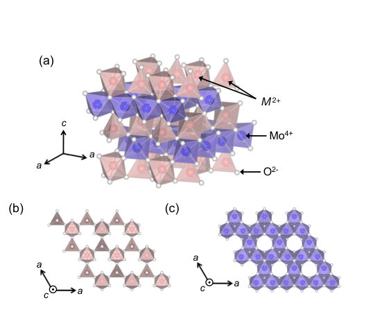
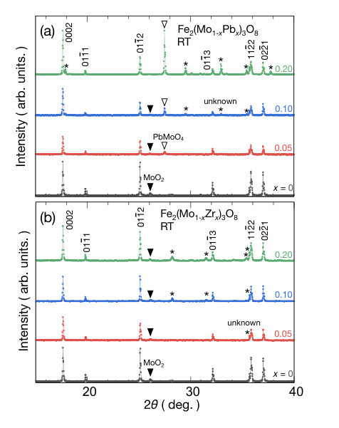
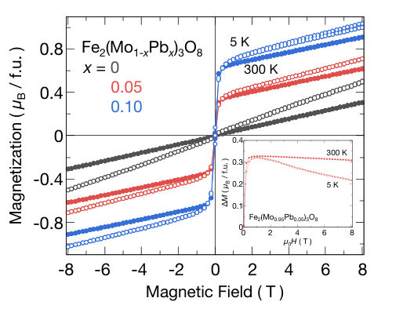
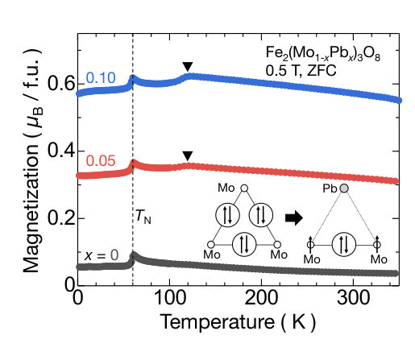
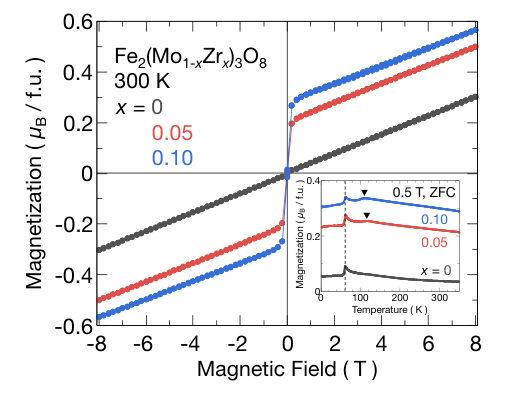
Summary. This study demonstrates that substituting non-magnetic ions into the Mo sites of the polar magnet Fe2Mo3O8 breaks up spin-singlet clusters, creating active spins that induce room-temperature ferromagnetism. This approach provides a strategy for designing new magnetoelectric materials by controlling non-magnetic cluster states.
Why it may be interesting. not directly relevant
Main problem. Investigating how substituting non-magnetic Pb4+ and Zr4+ ions into the Mo sites of the polar magnet Fe2Mo3O8 disrupts Mo spin-singlet trimers to induce new magnetic functionalities.
Main result. The disruption of Mo spin-singlet trimers induces active spins in the Mo layer, leading to the emergence of ferromagnetic-like behavior that persists up to room temperature.
Method. Solid-state reaction synthesis followed by powder X-ray diffraction (XRD) with Rietveld refinement and magnetic measurements using a vibrating sample magnetometer (VSM) up to 8 T.
Model / system. The system is the ternary transition-metal oxide Fe2Mo3O8, a polar magnet with a layered structure of magnetic Fe honeycomb lattices and non-magnetic Mo kagome lattices containing Mo4+ spin-singlet trimers.
Key observables. Magnetization (M) vs. temperature (T) and magnetic field (H), Neel temperature (TN), and magnetization increment (delta M).
Important parameters / regimes. Substitution level (x) from 0 to 0.20, Neel temperature TN approx 60 K, and effective spin S = 1/2 per active Mo ion.
Assumptions / limitations. The model assumes a single dopant ion severs two of the three spin-singlet bonds in a trimer, leaving one intact dimer with localized spins.
Paper structure. The paper introduces the material and the problem of Mo-site substitution, describes the experimental synthesis and structural characterization, presents magnetic measurement results showing emergent ferromagnetism, and provides a quantitative statistical model to explain the observed magnetization increase.
The ternary transition-metal oxide Fe$_2$Mo$_3$O$_8$ is a polar magnet characterized by a layered structure of magnetic Fe honeycomb lattices and non-magnetic Mo kagome lattices. Whereas previous studies have primarily focused on the chemical substitution at the Fe sites to modulate the magnetic properties, the Mo sites have remained largely unexplored due to the strong spin-singlet trimerization of Mo$^{4+}$ ions. In this study, we investigated the effect of substituting non-magnetic Pb$^{4+}$ and Zr$^{4+}$ ions into the Mo sites to intentionally disrupt the Mo trimers. Our results reveal that the disruption of the Mo spin-singlet state induces active spins within the Mo layer, resulting in the emergence of a ferromagnetic-like behavior that persists even at room temperature. Quantitative analysis that takes into account the weight fraction of the main phase suggests an effective spin $S = 1/2$ state per active Mo ion upon trimer disruption. These findings demonstrate that controlling non-magnetic cluster states within a polar host via chemical substitution is a promising approach for designing room-temperature magnetoelectric materials.
Authors: Ashutosh Anand, Mukul Kabir
Type: theory · Category: strongly correlated electrons · PDF: https://arxiv.org/pdf/2605.22415v1
Analysis basis: full PDF text, analyzed in chunks
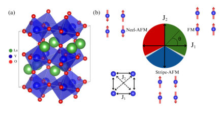
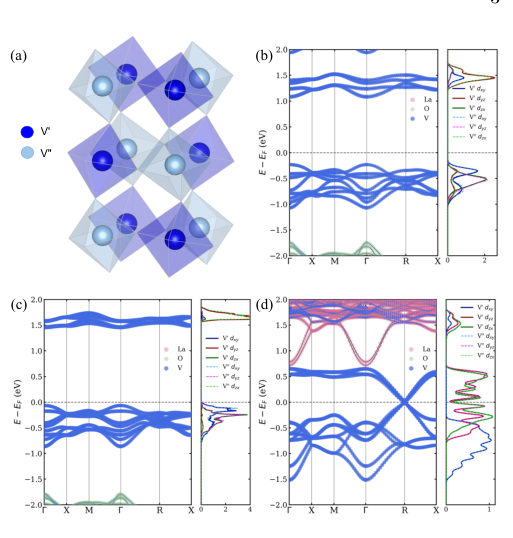
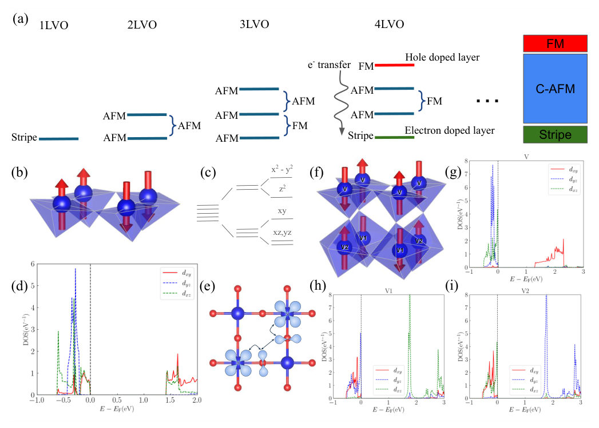
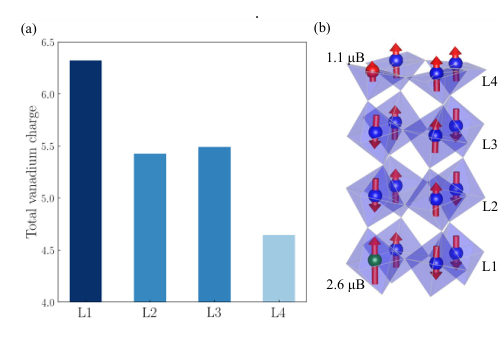
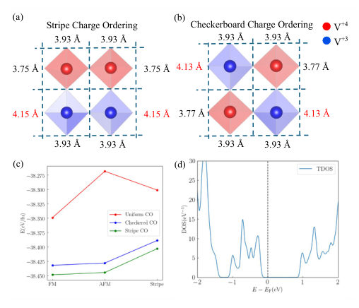
Summary. This paper uses DFT and Monte Carlo simulations to show how the magnetic and electronic properties of LaVO3 change when it is thinned down to a monolayer. It discovers that thickness and charge transfer from polar catastrophes can induce new ferromagnetic and charge-ordered phases.
Why it may be interesting. not directly relevant
Main problem. Investigating the intrinsic electronic and magnetic properties of freestanding ultrathin LaVO3 films, specifically how thickness and charge transfer drive emergent magnetic and charge-ordered phases.
Main result. The study reveals a thickness-dependent magnetic transition from bulk-like C-type AFM to stripe-AFM in monolayers, and identifies that polar catastrophe-driven charge transfer in thicker films creates FM and stripe-AFM surface states.
Method. Density functional theory (DFT) using VASP with a Hubbard U correction, supplemented by classical Monte Carlo simulations using the Vampire code.
Model / system. Freestanding ultrathin LaVO3 films ranging from monolayer to 8 layers, modeled with an orthorhombic/monoclinic perovskite structure and a Heisenberg model for magnetic interactions.
Key observables. Magnetic phases (C-AFM, stripe-AFM, FM, Neel-AFM), charge ordering patterns, magnetic moments, and exchange interaction parameters (J1, J2, J_perp).
Important parameters / regimes. Film thickness (1L to 8L), doping concentrations (0.5h/fu, 0.25h/fu, etc.), and Hubbard U = 3 eV.
Assumptions / limitations. The use of a classical Monte Carlo approach for magnetic transitions and the approximation of electron correlations via the DFT+U method.
Figures summary. Figure 1(a) shows the supercell structure; Figure 5 illustrates stripe and checkerboard charge ordering patterns and their relative energies.
Paper structure. The paper begins with the motivation of studying freestanding membranes, moves to the computational methodology, details the thickness-dependent magnetic transitions, explores polar catastrophe-driven charge transfer in thicker films, and concludes with an analysis of doping-induced charge ordering.
Transition metal oxide perovskites are an ideal platform for exploring the interplay between spin, orbital, charge and lattice degrees of freedom. Among them, \ce{LaVO3} has been extensively studied in heterostructures and superlattices, where exotic phases have been reported. Motivated by the advances in freestanding oxide membranes, we investigate the intrinsic properties of freestanding ultrathin \ce{LaVO3} films using density functional theory. Our calculations reveal a sequence of magnetic phase transitions with thickness, starting from stripe-AFM in monolayer until the bulk like C-AFM is recovered. Beyond four layers, polar catastrophe driven charge transfer dopes the surface layers giving rise to stripe-AFM and ferromagnetic surface states while the central layers remain bulk like. We further explore this fact by studying charge doped monolayer, discovering that hole doping drives the system into ferromagnetic state. Doping also induced charge ordering in the system. A striped charge ordering pattern is observed at 0.5 h/fu, while a 3:1 stripe pattern emerges at 0.25 h/fu, indicating that the periodicity of the superstructure changes with doping concentration.
Authors: Turgut Yilmaz, Anil Rajapitamahuni, Suji Park, Houk Jang, Asish K. Kundu, Elio Vescovo
Type: experiment · Category: strongly correlated electrons · PDF: https://arxiv.org/pdf/2605.22292v1
Analysis basis: full PDF text, analyzed in chunks
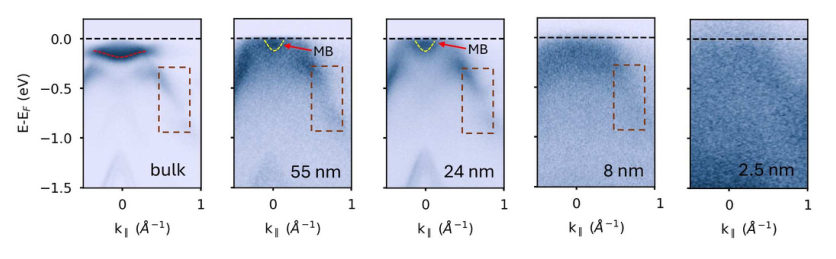
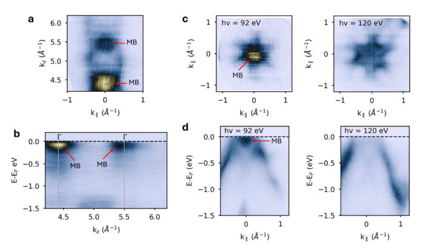
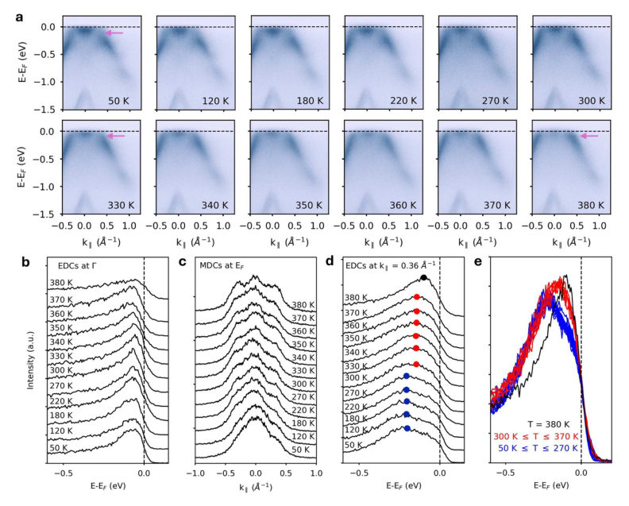
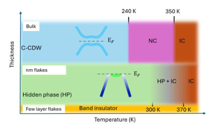
Summary. This paper demonstrates that the transient 'hidden' metallic phase of 1T-TaS2 can be stabilized as a stable equilibrium state by controlling the thickness of exfoliated flakes. This discovery provides a way to access and control competing electronic configurations in correlated materials without needing ultrafast laser excitation. The findings have significant implications for developing new phase-change technologies and quantum electronic devices.
Why it may be interesting. not directly relevant
Main problem. The study aims to understand how to stabilize the metastable 'hidden' metallic phase of 1T-TaS2 in equilibrium and how electronic phases evolve with material thickness and temperature.
Main result. The researchers discovered that intermediate-thickness 1T-TaS2 flakes spontaneously host a stable, equilibrium metallic state (HPLMS) that mimics the transient hidden phase seen in bulk crystals under excitation.
Method. High-resolution angle-resolved photoemission spectroscopy (ARPES) was performed on mechanically exfoliated 1T-TaS2 flakes of varying thicknesses using the mu-ARPES technique.
Model / system. The physical system is 1T-TaS2 (tantalum disulfide), a layered transition metal dichalcogenide known for its complex charge density wave (CDW) and Mott insulating phases.
Key observables. Spectral weight at the Fermi level, metallic band (MB) intensity, hybridization gaps, Fermi surface maps, and energy-momentum (E-k) dispersions.
Important parameters / regimes. Material thickness (ranging from 2.5 nm to 55 nm), temperature (50 K to 380 K), and out-of-plane momentum (kz).
Assumptions / limitations. The study assumes the free-electron final-state approximation for determining out-of-plane momentum.
Figures summary. Figure 1 shows dimensional control and thickness-dependent spectra; Figure 2 illustrates kz periodicity and Fermi surface maps in 25 nm flakes; Figure 3 details temperature-dependent EDCs and MDCs; Figure 4 presents a schematic phase diagram as a function of thickness and temperature.
Paper structure. The paper introduces the problem of metastable phases, describes the experimental setup and sample preparation, presents thickness-dependent spectroscopic results, analyzes temperature-driven phase evolution, and concludes with a proposed phase diagram.
Electronic phases that lie outside the equilibrium ground state offer a route to explore competing configurations in correlated materials. In 1T-TaS2, ultrafast excitation accesses a metallic hidden phase that is distinct from the commensurate insulating ground state. Here we use angle-resolved photoemission spectroscopy to show that an equivalent electronic configuration is stabilized in exfoliated intermediate-thickness 1T-TaS2 flakes, where it persists up to room temperature before evolving through a different sequence of electronic transitions. This equilibrium hidden-phase-like state hosts a metallic band with finite Fermi-level spectral weight while retaining the characteristic hybridization gaps associated with the star-of-David band folding. These results establish a platform for controlling competing electronic states in layered materials, with implications for both quantum science and phase change technologies.
Authors: Junyu Zhou, Ali Javadi-Abhari, Gushu Li
Type: theory · Category: quantum information and computing · PDF: https://arxiv.org/pdf/2605.21746v1
Analysis basis: full PDF text, analyzed in chunks
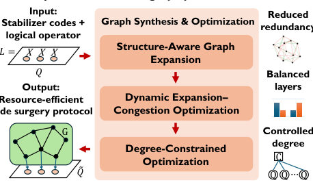
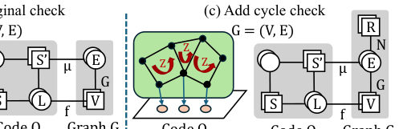
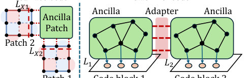
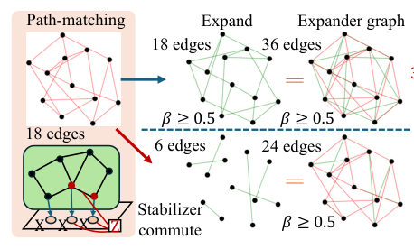
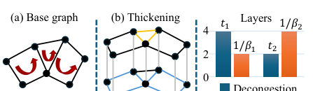
Summary. The paper introduces GeneCS, a compiler designed to automate the creation of efficient 'code surgery' protocols for quantum error correction. By treating the construction of ancilla systems as a graph optimization problem, it significantly reduces the physical qubit overhead required for logical operations without sacrificing error protection.
Why it may be interesting. not directly relevant
Main problem. The high resource overhead (ancillary qubits and checks) required for performing fault-tolerant code surgery and cross-code communication between arbitrary stabilizer codes.
Main result. The GeneCS compiler achieves an average reduction of over 85% in ancillary qubits and checks for both single-code and cross-code operations while preserving logical error rates and scalability.
Method. A graph-based synthesis framework using three optimization strategies: structure-aware graph expansion, dynamic expansion-congestion optimization, and degree-constrained optimization via graph thickening and cellulation.
Model / system. The framework operates on quantum stabilizer codes, including topological codes (surface, color) and QLDPC codes (Bivariate Bicycle, Hypergraph Product, Quantum Tanner), modeled as low-dimensional chain complexes.
Key observables. Ancillary qubit/check overhead, code distance, logical error rate, and maximum stabilizer weight (degree).
Important parameters / regimes. Cheeger constant (expansion), congestion (edge overlap), and maximum qubit/check degrees.
Assumptions / limitations. The scalability results observed in surface codes are assumed to extend to other CSS stabilizer codes due to their locally repetitive structure.
Figures summary. Figure 1 shows the GeneCS workflow; Figure 2 maps surface codes to graphs; Figure 3 details graph modification; Figure 5-7 illustrate expansion, congestion, and graph thickening; Figure 9 shows logical error rate stability.
Paper structure. The paper introduces the code surgery problem, defines a graph-theoretic model for ancilla systems, presents the GeneCS compiler algorithms (expansion, congestion, and degree optimization), provides experimental benchmarks on various code families, and discusses scalability and error rate performance.
Efficiently realizing logical operations on general stabilizer codes remains a long-standing challenge in fault tolerant quantum computing. While code surgery provides a general framework with provable guarantees by joint logical measurements, existing constructions are largely theoretical and incur substantial ancilla overhead in practice. In this work, we propose GeneCS, a resource-efficient compiler for synthesizing code surgery protocols for arbitrary stabilizer codes. Our approach leverages structure-aware optimizations to eliminate redundancy in graph construction, dynamically balance expansion and congestion, and incorporate code degree constraints. Experimental results show that GeneCS achieves an average reduction of over $85\%$ in ancillary qubits and checks for both single-code and cross-code logical operations, while preserving logical error rates. Moreover, our compiler scales to codes with more than $10^4$ qubits with an amortized compilation time of about one second per instance. These results enable practical logical operations and efficient cross-code communication, thereby supporting the deployment of modern QLDPC codes and heterogeneous quantum architectures.
Authors: Yunchao Zhang, Andreas Feuerpfeil, Subir Sachdev, Ronny Thomale, Yasir Iqbal
Type: theory · Category: strongly correlated electrons · PDF: https://arxiv.org/pdf/2605.21587v1
Analysis basis: full PDF text, analyzed in chunks
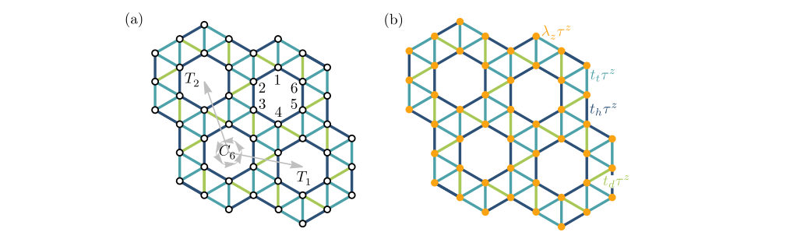
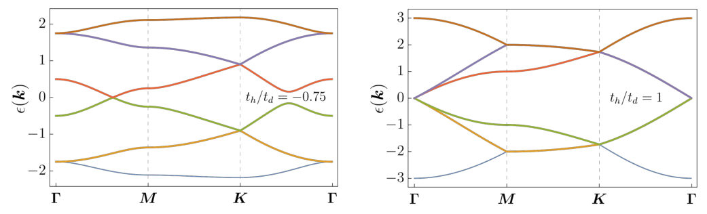
Summary. This paper investigates whether a large number of fermion flavors can stabilize a U(1) Dirac spin liquid on the maple-leaf lattice. It identifies that the stability is not symmetry-protected but depends on the dynamical irrelevance of specific allowed monopoles. The work provides specific spectral predictions to guide numerical studies using exact diagonalization.
Why it may be interesting. not directly relevant
Main problem. Determining the stability of a U(1) Dirac spin liquid (DSL) on the maple-leaf lattice against the proliferation of monopoles that could cause confinement.
Main result. The authors show that the maple-leaf lattice realizes a large-flavor QED3 theory with Nf=12, and while five spin-singlet monopoles are symmetry-allowed, their stability depends on whether they are dynamically irrelevant.
Method. Theoretical framework using fermionic parton construction, projective symmetry group (PSG) analysis, 't Hooft anomaly matching, and Wannier-center decomposition.
Model / system. A U(1) Dirac spin liquid on a frustrated maple-leaf lattice, described by an effective (2+1)D QED3 theory with Nf=12 Dirac fermions.
Key observables. Monopole quantum numbers (spin, lattice, and time-reversal), scaling dimensions of monopole operators, and symmetry-resolved spectral content.
Important parameters / regimes. Flavor number Nf=12, scaling dimension of the charge-one monopole (Delta_1), and hopping parameters (th, td, tt).
Assumptions / limitations. The stability of the phase is assumed to depend on the dynamical irrelevance of symmetry-allowed monopoles rather than symmetry protection.
Figures summary. Figure 1 shows the maple-leaf lattice structure and mean-field bond amplitudes; Figure 2 illustrates spinon dispersions and the Nf=4 regime.
Paper structure. The paper introduces the maple-leaf lattice as a large-flavor platform, derives the effective QED3 theory, performs a symmetry classification of monopoles, verifies anomaly matching, and provides numerical predictions for testing the phase.
The $\mathrm{U}(1)$ Dirac spin liquid provides a useful organizing framework for frustrated magnets: it offers an algebraic parent state from which competing orders, confinement patterns, and low-energy spectral features can be understood. Whether such a state can occur as a stable ground state of a two-dimensional spin Hamiltonian remains an open question, because monopole events of the compact gauge field can proliferate and confine the spinons. Here, we show that the maple-leaf lattice provides a distinct route to this problem. Its Dirac spin liquid realizes QED$_3$ with $N_f=12$ Dirac fermions, substantially more than the $N_f=4$ theories of the triangular and kagome lattices. We classify the fundamental monopoles under the full microscopic symmetry group and find five charge-one spin-singlet monopoles that are trivial under lattice symmetries, time reversal, and spin rotation. The phase is therefore not protected by symmetry in the usual sense: its stability depends on whether these allowed monopoles are dynamically irrelevant. Available large-$N_f$ and Monte Carlo estimates place the charge-one monopole dimension close to the relevance threshold in $(2+1)$ dimensions, making the maple-leaf lattice a concrete large-flavor platform for testing the stability of compact QED$_3$ in a quantum magnet. The same monopole classification gives direct numerical predictions, identifying the symmetry sectors in which singlet, triplet, and quintet monopole excitations should appear. This provides a route to testing the $N_f=12$ Dirac spin liquid through symmetry-resolved exact diagonalization and variational studies of maple-leaf spin Hamiltonians.
Authors: Zheyuan Liu, Shinichiro Asai, Shingo Takahashi, Hiraku Saito, Taro Nakajima, Takatsugu Masuda
Type: experiment · Category: strongly correlated electrons · PDF: https://arxiv.org/pdf/2605.21616v1
Analysis basis: full PDF text, analyzed in chunks
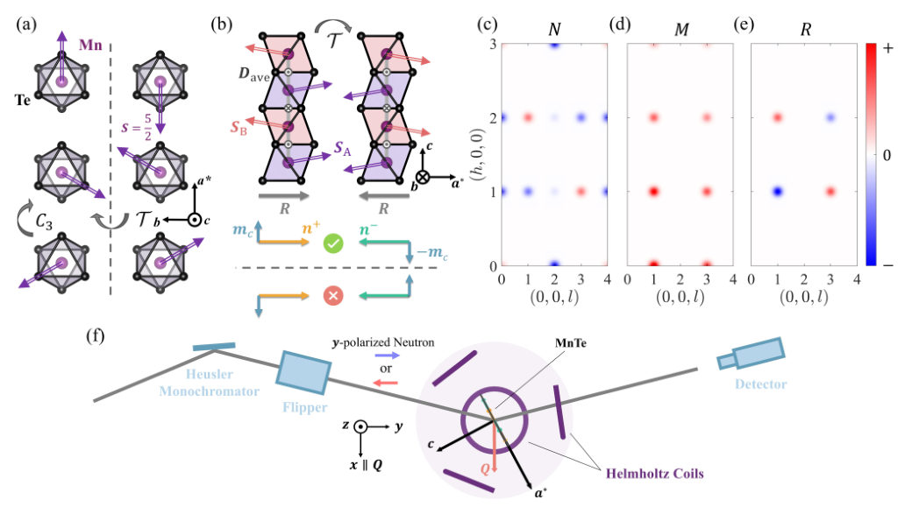
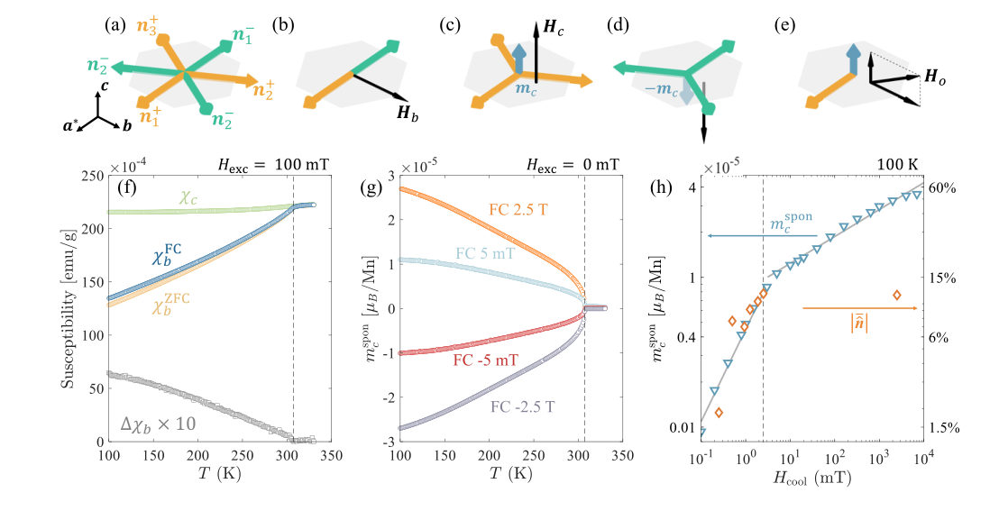
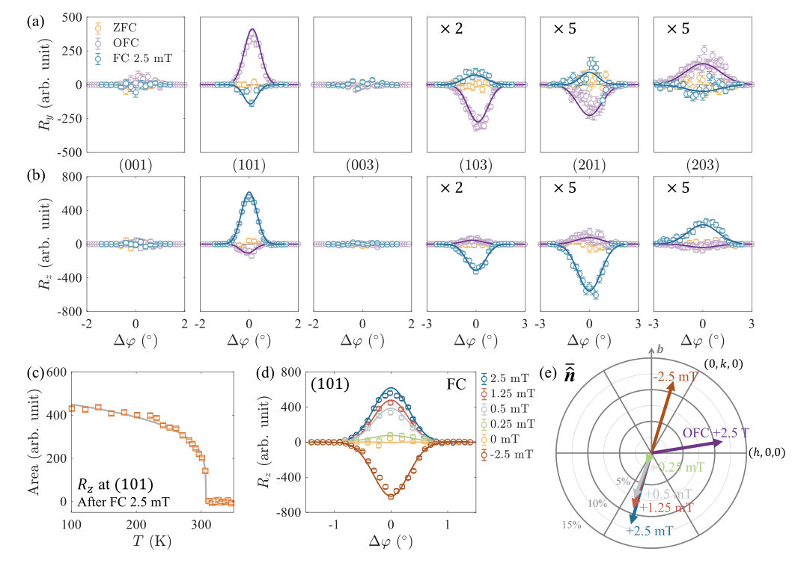
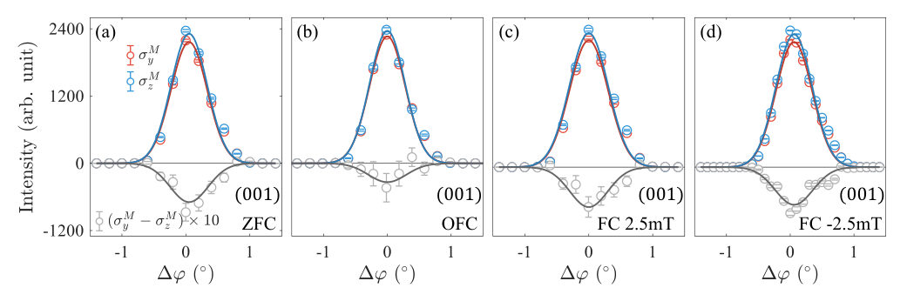
Summary. This paper provides direct experimental evidence for the existence and controllability of altermagnetic order in bulk MnTe. By using polarized neutron diffraction, the authors show that the Néel vector can be manipulated with very small magnetic fields, which is a crucial step toward using altermagnets in spintronic devices.
Why it may be interesting. not directly relevant
Main problem. Determining if altermagnetic order in bulk MnTe can be directly observed and controlled by external magnetic fields in the absence of net magnetization.
Main result. The researchers demonstrated that the altermagnetic Néel vector and the associated weak ferromagnetic moment (WFM) can be switched using milli-Tesla-scale magnetic field cooling, providing direct evidence of a net Néel vector in the bulk.
Method. Polarized Neutron Diffraction (PoND) in half-polarized mode was used to probe nuclear-magnetic interference terms, complemented by magnetic susceptibility and spontaneous magnetization measurements.
Model / system. The study focuses on bulk MnTe, a prototype altermagnet with a centrosymmetric hexagonal lattice (space group P63/mmc) and an A-type antiferromagnetic ground state.
Key observables. Nuclear-magnetic interference (NMI) vector R, weak ferromagnetic moment (WFM), Néel vector (n), and magnetic susceptibility.
Important parameters / regimes. Néel temperature TN = 307 K, magnetic field scales in the milli-Tesla range, and the presence of spin-orbit coupling (SOC).
Assumptions / limitations. The study assumes the WFM arises from an imbalance in antiphase domains rather than from domain walls.
Figures summary. Fig 1 shows the MnTe domain states and the NMI vector mechanism; Fig 2 illustrates Néel vector configurations and susceptibility/WFM measurements; Fig 3 presents the NMI vector components under different cooling conditions and their temperature dependence.
Paper structure. The paper introduces the concept of altermagnetism, describes the experimental setup for polarized neutron diffraction, presents the observation of NMI as evidence for the Néel vector, demonstrates domain switching via field cooling, and discusses the origin of the weak ferromagnetic moment.
Altermagnetic order, characterized by the Néel vector, breaks time-reversal symmetry (TRS) even in the nonrelativistic limit. Although spin-polarized and anomalous transport phenomena emerge with this order, they are mutually compensated by TRS-connected antiphase domains with opposite Néel vectors. Here we employ polarized neutron diffraction to directly probe the altermagnetic order in MnTe. Pronounced nuclear-magnetic interference terms were observed, providing direct evidence of a net Néel vector in the bulk crystal. Moreover, a weak ferromagnetic moment (WFM), originating from relativistic spin-orbit coupling, was found to be coupled with the altermagnetic order. Both the altermagnetic order and the WFM can be switched by milli-Tesla-scale magnetic field cooling.
Authors: Luca Lotz, Michael A. Klatt
Type: theory · Category: disordered systems and neural networks · PDF: https://arxiv.org/pdf/2605.22803v1
Analysis basis: full PDF text, analyzed in chunks
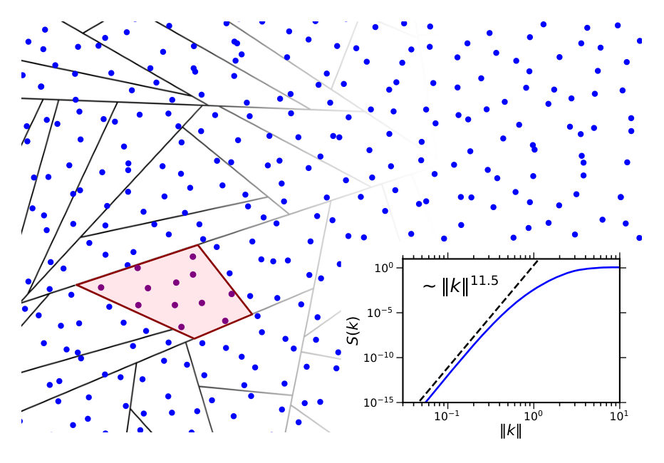
Summary. This paper provides a mathematical framework to understand how density fluctuations, ranging from hyperfluctuation to stealthy hyperuniformity, behave under random mass transport. It solves an open problem regarding the persistence of these fluctuations in dimensions d >= 3 and introduces new, efficiently simulatable point processes.
Why it may be interesting. not directly relevant
Main problem. Determining the conditions under which the scaling of density fluctuations (p-uniformity) is preserved when a random measure undergoes a random transport process.
Main result. The authors establish a persistence theorem stating that p-uniformity is preserved under transport if the transport distance has a finite (d+p)-th moment and certain expansion terms are controlled.
Method. The study uses Fourier analysis of the Bartlett spectral measure, Taylor expansions of the transport kernel, and moment conditions on transport distance.
Model / system. The model involves stationary random complex measures on R^d, including point processes and mass-redistribution (transport) kernels that move mass from a source to a destination.
Key observables. p-uniformity exponent, asymptotic variance, Bartlett spectral measure, and structure factor.
Important parameters / regimes. Spatial dimension (d), hyperuniformity exponent (p), and transport distance moments.
Assumptions / limitations. The measures are assumed to be stationary (translation-invariant) and locally square-integrable; the expansion requires smoothness of test functions.
Figures summary. Figure 1 illustrates the construction of a random fair tiling and a resulting point process, demonstrating an isotropic process with a very high scaling exponent.
Paper structure. The paper begins by defining p-uniformity and transport kernels, develops a Taylor expansion for the destination measure, proves the main persistence theorem, and concludes with new point process constructions and an outlook on the converse statement.
We introduce $p$-uniformity to characterize the scaling of density fluctuations in spatial random systems in $\mathbb{R}^d$, ranging from hyperfluctuation to stealthy hyperuniformity. Our central theorem establishes sufficient conditions to preserve $p$-uniformity under transport. The first condition, a finite $(d+p)$-th moment of the transport distance, allows for a Taylor expansion of the transport. The second condition controls the corresponding terms. We thus solve a previously stated open problem; indeed we extend it, since our result applies to a general $p$-uniform source in any dimension, and the source and transport may be dependent. As an application, we construct new classes of point processes that are isotropic and $p$-uniform with arbitrarily high $p$, and that can be simulated in linear time. We conclude with an outlook on a converse statement.
Authors: Maximilian Schier, Lea Richtmann, Christian Staufenbiel, Tobias Schmale, Daniel Borcherding, Michèle Heurs, Bodo Rosenhahn
Type: theory · Category: quantum information and computing · PDF: https://arxiv.org/pdf/2605.22463v1
Analysis basis: full PDF text, analyzed in chunks
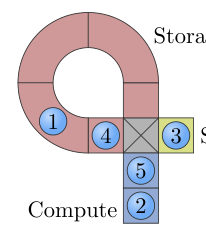
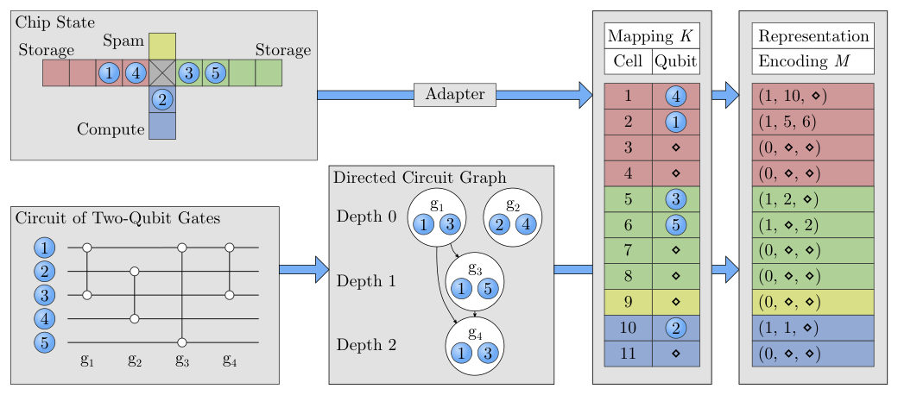
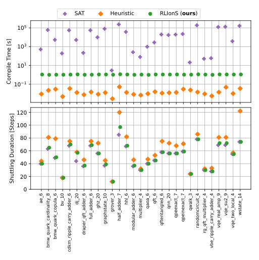
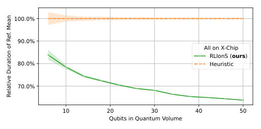
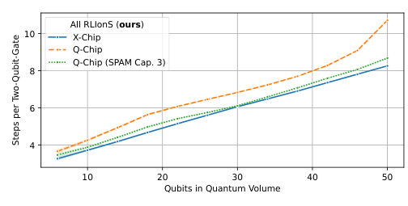
Summary. The paper introduces RLIonS, a reinforcement learning-based compiler designed to optimize the movement of ions in QCCD-based quantum computers. By treating shuttling as a sequential decision problem, the method significantly reduces the number of required transport operations compared to existing heuristics. This reduction is crucial for executing larger quantum circuits within the limited coherence times of trapped-ion qubits.
Why it may be interesting. This work is highly relevant for the development of scalable quantum hardware, as it addresses the critical classical control bottleneck of managing qubit movement to maintain coherence in trapped-ion systems.
Main problem. Optimizing ion shuttling sequences in QCCD-based trapped-ion quantum computers to minimize latency and overhead caused by qubit transport.
Main result. The proposed RLIonS reinforcement learning compiler achieves up to a 36.3% reduction in shuttling operations compared to state-of-the-art heuristics and remains near-optimal relative to exact SAT solvers.
Method. A reinforcement learning approach using Proximal Policy Optimization (PPO) and a ResNet architecture, formulated as a Semi-Markov Decision Process (SMDP) with a novel sinusoidal encoding for chip states.
Model / system. The study focuses on the Quantum Charge-Coupled Device (QCCD) architecture for trapped-ion quantum computing, specifically evaluating X-chip and Q-chip (storage ring) layouts.
Key observables. Number of shuttling operations (steps), shuttling duration, and compilation/inference time.
Important parameters / regimes. Circuit depth (k_lookahead), number of ions (up to 50), and the discount rate (beta).
Assumptions / limitations. The model assumes deterministic transitions between states and that gates beyond a specific lookahead depth do not influence immediate decisions.
Figures summary. Figure 1 shows the Q-chip layout; Figure 2 illustrates the RLIonS encoding pipeline from chip state to matrix; Figure 3 compares compile time and shuttling duration across methods; Figure 4 shows performance scaling with Quantum Volume; Figure 6 presents an ablation study on sinusoidal vs. linear encoding.
Paper structure. The paper introduces the shuttling bottleneck, describes the QCCD architectures, details the RLIonS RL framework (SMDP formulation and encoding), presents benchmarking against SAT and heuristic methods, provides ablation studies on encoding and rewards, and concludes with future directions.
Scalable trapped-ion quantum computing is commonly realized with modular chips that feature distinct zones with specific functionalities, such as storage, state preparation, and gate execution. To execute a quantum circuit, the ions must be transported between these zones. This process is called ion shuttling. To achieve reliable computation results, the shuttling process must be optimized. However, as the number of ions increases, this becomes a high-dimensional optimization problem where optimal solutions cannot be computed efficiently. We demonstrate, to the best of our knowledge, the first use of reinforcement learning (RL) for the optimization of ion shuttling. RL is well-suited for such scenarios, as it enables learning a strategy through direct interaction with the problem. We show that our RL approach outperforms current state-of-the-art heuristic techniques, yielding a reduction in shuttling operations of up to 36.3 %. Furthermore, we show that our method is easily applicable to various chip architectures. Our approach offers a versatile method to study shuttling efficiency during chip design and, therefore, a highly relevant tool for future, more complex architectures.
Authors: Masaki Gen, Shun Okumura, Shusaku Imajo, Taro Nakajima, Karel Prokes, Shunsuke Kitou, Yusuke Tokunaga, Yoichi Nii, Koichi Kindo, Yoshimitsu Kohama, Shintaro Ishiwata, Taka-hisa Arima
Type: both · Category: strongly correlated electrons · PDF: https://arxiv.org/pdf/2605.22517v1
Analysis basis: full PDF text, analyzed in chunks
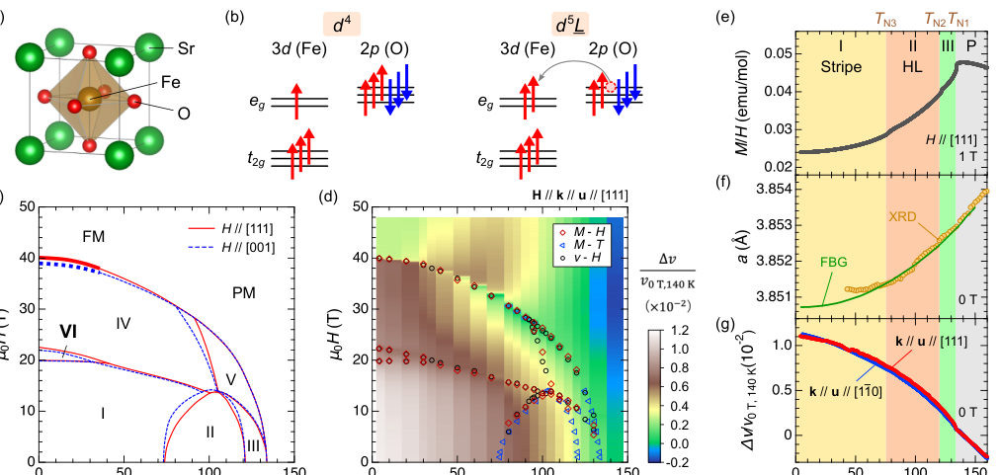
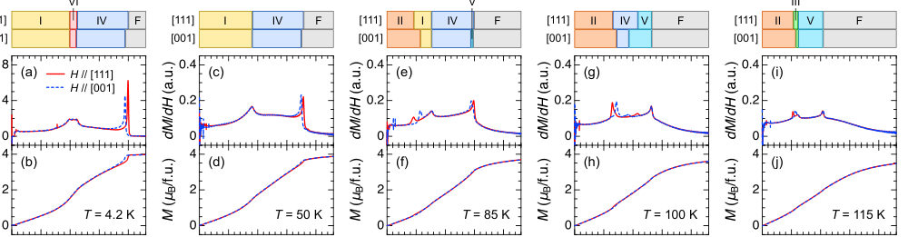
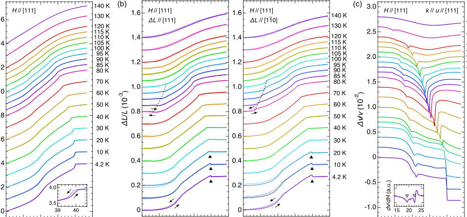
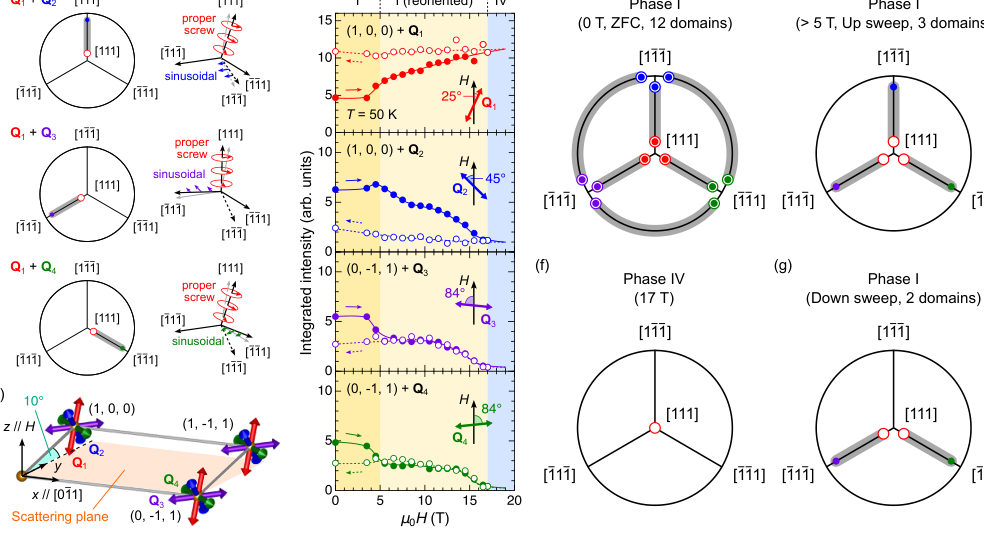
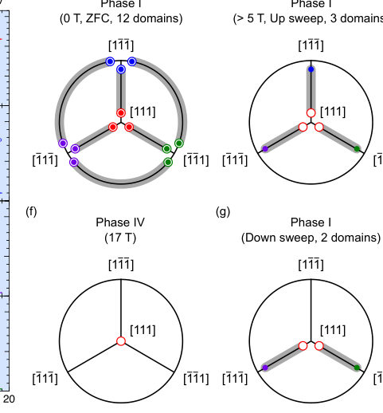
Summary. This paper revisits the complex magnetic phase diagram of the topological helimagnet SrFeO3 under high magnetic fields. It discovers a new intermediate phase and demonstrates that the transition to the forced ferromagnetic state involves a valence transition related to ligand-hole density redistribution. These findings highlight the critical role of electronic itinerancy in stabilizing complex multiple-Q magnetic structures.
Why it may be interesting. not directly relevant
Main problem. Resolving the microscopic mechanism of multiple-Q phases in the topological cubic helimagnet SrFeO3 and understanding the field-orientation dependence of its magnetic phase diagram.
Main result. The study identifies a new intermediate-field phase (Phase VI) and provides evidence for a valence transition driven by the redistribution of ligand-hole density when entering the forced ferromagnetic phase.
Method. The researchers combined pulsed high-field magnetization, magnetostriction, and ultrasound measurements with single-crystal neutron scattering and Monte Carlo simulations using an effective spin Hamiltonian.
Model / system. The system is SrFeO3, a cubic perovskite itinerant magnet characterized by a ligand-hole 3d5L electronic configuration. The theoretical framework uses an effective bilinear-biquadratic spin Hamiltonian with cubic single-ion anisotropy.
Key observables. Magnetization (M), differential susceptibility (dM/dH), longitudinal and transverse magnetostriction, longitudinal sound velocity, and magnetic Bragg peak intensities (Q1-Q4).
Important parameters / regimes. Magnetic field strengths up to 50 T, temperatures down to 4.2 K, field orientations H || [001] and H || [111], and the modulation vector q approx 0.13 r.l.u.
Assumptions / limitations. The effective spin model assumes that the essential magnetic features can be captured by bilinear and biquadratic interactions and cubic anisotropy, while the valence transition is treated as a subtle redistribution of ligand-hole density.
Figures summary. Figure 1 shows the crystal structure; Figure 3 displays the metamagnetic transition, negative volume jump, and elastic anomalies; Supplemental figures show the evolution of neutron scattering profiles and integrated intensities of magnetic reflections.
Paper structure. The paper introduces the system and problem, details the experimental and computational methods, presents the reconstructed high-field phase diagram and new phase discovery, discusses the role of anisotropy and valence transitions, and concludes with a summary of the microscopic mechanism.
The cubic perovskite SrFeO$_{3}$ is a prototypical centrosymmetric itinerant magnet that hosts a quadruple-${\mathbf Q}$ hedgehog-antihedgehog lattice and exhibits a complex magnetic-field-temperature phase diagram. Yet, the microscopic mechanism underlying the emergence of its versatile multiple-${\mathbf Q}$ phases remains unresolved. Here, we elucidate the field-orientation dependence of the magnetic phase diagram and establish an effective spin Hamiltonian for SrFeO$_{3}$ that incorporates a cubic single-ion anisotropy together with bilinear and biquadratic interactions in momentum space. In addition, we observe magnetoelastic signatures of a first-order valence transition upon entering the forced FM phase at 40 T, which would be attributed to the suppression of negative charge transfer. These findings emphasize the pivotal importance of electronic itinerancy arising from the formation of a ligand-hole band in stabilizing multiple-${\mathbf Q}$ phases.
Authors: Rong Zhang, Sijia Zhao, Hong-Chen Jiang, Brian Moritz, Edwin W. Huang, Thomas P. Devereaux
Type: theory · Category: strongly correlated electrons · PDF: https://arxiv.org/pdf/2605.21585v1
Analysis basis: full PDF text, analyzed in chunks
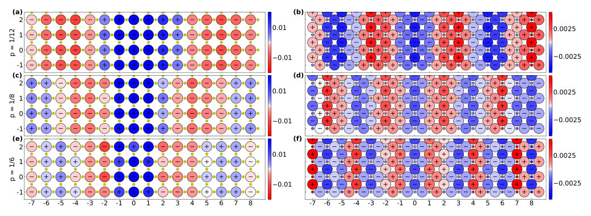
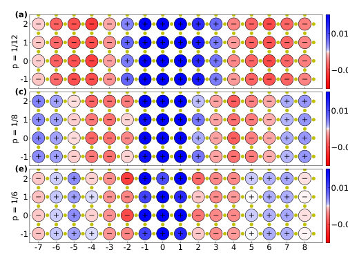
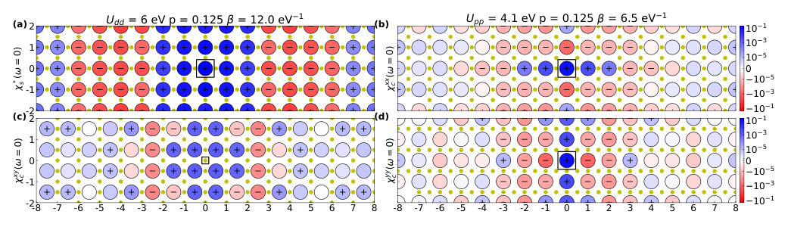
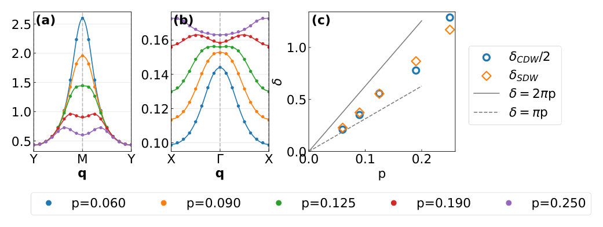
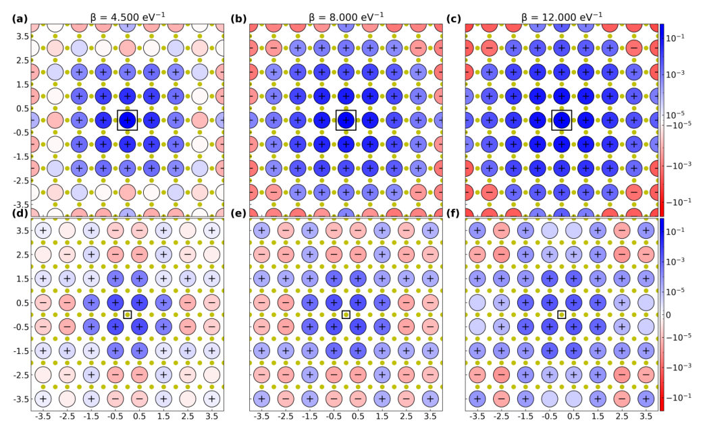
Summary. This paper uses DMRG and DQMC to show that the Emery model supports robust, intertwined charge and spin stripes. It specifically highlights how oxygen orbital structure contributes to charge modulation and how temperature-driven symmetry crossovers link nematicity to stripe formation.
Why it may be interesting. not directly relevant
Main problem. The study investigates whether the low-energy physics of the single-band Hubbard model is equivalent to the multi-band Emery model and explores the nature of intertwined spin and charge stripes and nematicity within the Emery model.
Main result. The researchers confirm the presence of oxygen-centered charge stripes and demonstrate that cooling the system triggers a crossover from B2g to B1g symmetry-breaking tendencies, linking nematicity to charge stripes.
Method. The study utilizes complementary Density Matrix Renormalization Group (DMRG) for ground-state simulations and Determinant Quantum Monte Carlo (DQMC) for finite-temperature properties.
Model / system. The Emery model, a three-band Hubbard model representing the CuO2 plane, consisting of copper-centered d-orbitals and oxygen-centered p-orbitals.
Key observables. Static charge and spin correlation functions, bond-charge nematic susceptibilities (B1g and B2g), and kinetic energy anisotropy.
Important parameters / regimes. Parameters include hopping integrals (tpd, tpp), Hubbard repulsions (Udd, Upp), charge transfer energy (pd), and hole doping levels.
Assumptions / limitations. The DQMC simulations are limited by the fermion sign problem, which restricts the exploration of very low temperatures or high interaction strengths.
Figures summary. Figures show real-space DQMC patterns of spin and charge stripes, momentum-space correlations illustrating the Yamada relation, and the temperature evolution of symmetry-breaking modes.
Paper structure. The paper introduces the problem of model equivalence, describes the Emery model parameters, presents DMRG ground-state results, details DQMC finite-temperature findings regarding stripe evolution and nematicity, and concludes with the connection between orbital physics and stripe directionality.
The single-band Hubbard model is one of the most extensively studied models in condensed matter physics, giving rise to intertwined spin and charge stripes that coexist with, or lie in the vicinity of, superconductivity in the phase diagram. However, whether the low energy physics of the single-band Hubbard model is fully equivalent to the multi-band (multi-orbital) Emery model remains an unsettled question. While the intertwined stripes and nematicity have been studied in the single-band Hubbard model, a comprehensive picture in the Emery model is lacking. In this paper, we focus on the less investigated intertwined charge stripes using complementary density matrix renormalization group (DMRG) and determinant quantum Monte Carlo (DQMC) techniques. Our ground state DMRG confirms the presence of the oxygen-centered charge stripes at a reduced amplitude in the Emery model parameter regime widely used in the study of intertwined stripes. Close analysis of the oxygen orbital structure of the static charge correlation function from DQMC reveals the charge stripe pattern in real-space, showcasing stronger charge density modulation on $p$-orbitals pointing along ``the rivers of charge'', consistent with DMRG. For the parameter set with the largest fermion signs, we managed to reach a temperature where the system first demonstrated tendencies to form purely unidirectional spin and charge stripes, and the $B_{1g}$ component becomes dominant in the bond-charge nematic susceptibility. This observation correlates with the doping dependence of the kinetic energy anisotropy, suggesting a close relation between the nematicity and charge stripes in the Emery model.
Authors: R. Aramyan, D. Budker, V. A. Dzuba, V. V. Flambaum, S. G. Porsev, M. S. Safronova, O. Tretiak, K. Zhang
Type: both · Category: other · PDF: https://arxiv.org/pdf/2605.22318v1
Analysis basis: full PDF text, analyzed in chunks
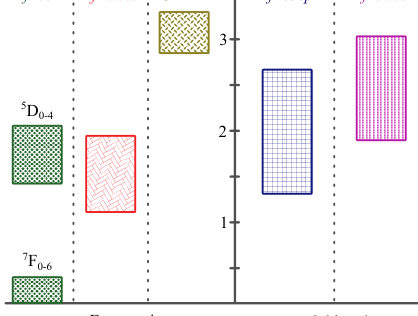
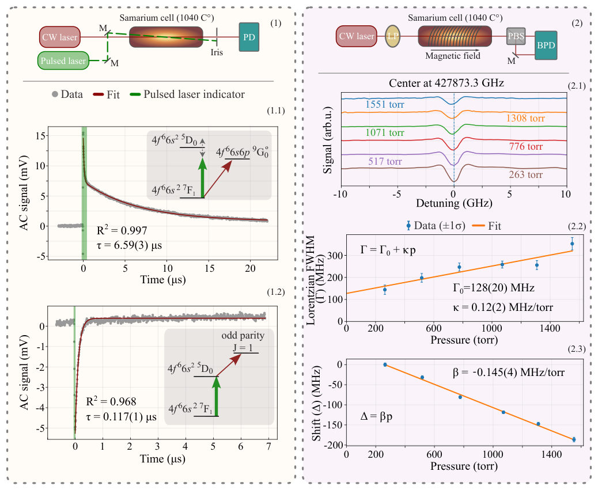
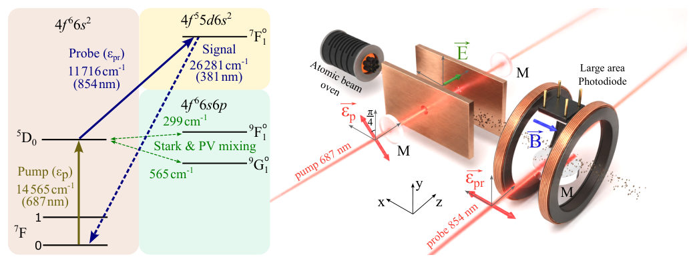
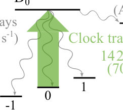
Summary. This paper reports the first experimental identification of a previously unobserved inner-shell energy level in neutral samarium. The discovery is significant because the 4f shell is shielded from external perturbations, making samarium an ideal candidate for high-precision tests of parity violation and searches for variations in the fine-structure constant.
Why it may be interesting. This paper is highly relevant for AMO physicists as it presents a new atomic platform for precision spectroscopy, explores the interplay between atomic structure and fundamental symmetry tests, and discusses the feasibility of laser cooling and clock applications in a complex multi-electron system.
Main problem. The search for physics beyond the Standard Model through low-energy tests of fundamental symmetries, specifically identifying and characterizing atomic transitions in samarium for parity violation studies.
Main result. The researchers successfully identified the previously unobserved 4f^6 6s^2 5D0 energy level in neutral samarium and demonstrated that its inner-shell nature provides a shielded, high-precision window for testing nuclear spin-dependent parity violation.
Method. The study combines dual-frequency-comb absorption spectroscopy and double-resonance population-depleation to identify energy levels, with many-body calculations (CI and MBPT) to predict transition properties and sensitivity coefficients.
Model / system. The physical system is neutral samarium (Sm) atoms in a high-temperature vapor cell, focusing on transitions involving the 4f inner-shell, specifically the 7F0 to 5D0 transition.
Key observables. Transition energy (14,564.90 cm-1), pressure broadening and shift, metastable lifetime, quality factor, and nuclear spin-dependent parity-violation amplitude.
Important parameters / regimes. Quality factor Q ~ 3x10^14, metastable lifetime ~ 120 ms, pressure broadening ~ 0.12 MHz/torr, and sensitivity coefficients for the fine-structure constant.
Assumptions / limitations. The theoretical calculations neglect QED corrections and assume a single-particle valence-nucleon model for estimating nuclear interaction constants.
Paper structure. The paper introduces the motivation for BSM tests, describes the experimental identification of the 5D0 level using frequency combs, presents the characterization of the 4f shell shielding via pressure studies, provides theoretical many-body calculations of transition properties, and concludes with proposed applications for parity violation and atomic clocks.
Forbidden atomic transitions provide some of the most stringent low-energy tests of physics beyond the Standard Model, with sensitivity set by the interplay between the sought-for signals and systematics suppressed by symmetry. Here we identify the previously unobserved $4f^{6}6s^{2}\,{}^{5}$D$_{0}$ level of neutral samarium at $14\,564.90(2)\,\mathrm{cm}^{-1}$, opening the ${}^{7}$F$_{0}\rightarrow{}^{5}$D$_{0}$ inner-shell transition for precision spectroscopy. Candidate lines extracted from dual-comb absorption spectra were assigned using double-resonance population-depletion and sequential-excitation measurements. The observed pressure broadening, $0.12(2)\,\mathrm{MHz/torr}$, and pressure shift, $0.145(4)\,\mathrm{MHz/torr}$, indicate an inner-shell $4f$-transition shielded from external perturbations. Many-body calculations predict a $\sim\!120\,\mathrm{ms}$ metastable lifetime (quality factor $\mathcal{Q}\sim 3\times 10^{14}$), large sensitivity coefficients for variation of the fine-structure constant, and a nuclear-spin-dependent parity-violation amplitude comparable to that of cesium. Crucially, the $J=0\rightarrow J=0$ selection rule suppresses by symmetry both the nuclear-spin-independent parity-violation channel and the M1 and E2 backgrounds that complicated previous heavy-atom experiments, yielding a uniquely clean window onto the nuclear anapole moment. The two stable spin-$7/2$ isotopes of samarium provide a remarkable opportunity to largely cancel atomic-structure uncertainties by measuring the ratio of parity-violation effects in the two isotopes. These results establish neutral samarium as a platform for inner-shell precision spectroscopy and tests of physics beyond the Standard Model.
Authors: Aryan Tyagi, Soumyaditya Das, Soumyajyoti Biswas, Anirban Chakraborti
Type: theory · Category: disordered systems and neural networks · PDF: https://arxiv.org/pdf/2605.22764v1
Analysis basis: full PDF text, analyzed in chunks
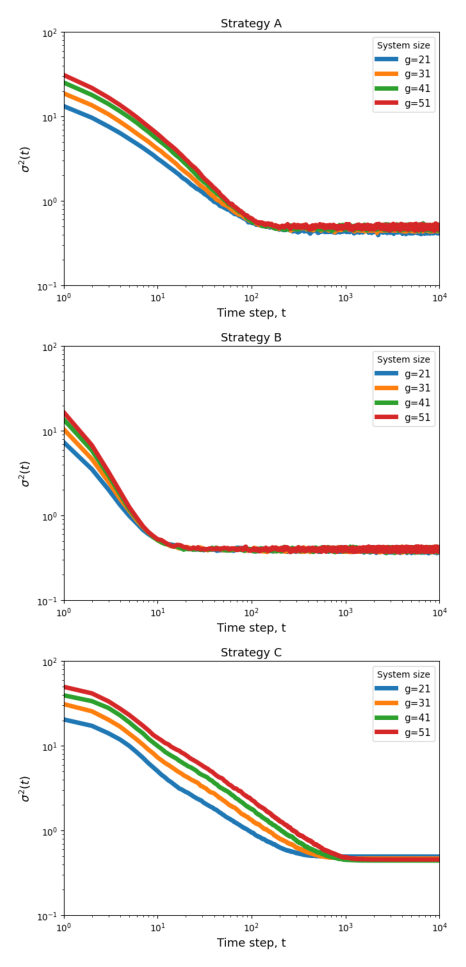
Summary. This paper demonstrates that the optimization problem in the Parallel Minority Game is mathematically equivalent to finding the ground state of a Sherrington-Kirkpatrick spin glass. This mapping provides a theoretical framework to understand the emergence of glassy, sub-optimal states in resource allocation problems. It also reveals that the system's energy function can saturate much faster than the actual population variance.
Why it may be interesting. not directly relevant
Main problem. The paper addresses the difficulty of minimizing population variance in the Parallel Minority Game (PMG) and seeks to understand the origin of 'frozen' sub-optimal configurations and glassy behavior in stochastic strategies.
Main result. The authors prove that minimizing population variance in the PMG is exactly equivalent to finding the ground state of an Ising spin glass (Sherrington-Kirkpatrick model) in the mean-field limit.
Method. The study uses a mathematical mapping that encodes agent choices as binary spin variables to transform the population variance formula into a quadratic Ising Hamiltonian.
Model / system. The system is the Parallel Minority Game (PMG), where N agents choose between two fixed locations from D possible sites. The problem is mapped to an Ising spin glass Hamiltonian with quenched random couplings (J_ij) and random fields (h_i).
Key observables. Population variance (efficiency metric), energy per spin (Hamiltonian value), and energy saturation time scales.
Important parameters / regimes. Number of agents (N), number of locations (D), target population (g), and switching probability (p_i).
Assumptions / limitations. The mapping assumes a mean-field limit; the analysis of strategies assumes specific rules for how agents update their choices based on population information.
Figures summary. Figure 1 shows the time evolution of population variance for different strategies and target populations; Figure 2 shows the evolution of the spin glass Hamiltonian energy reaching saturation.
Paper structure. The paper introduces the PMG problem, establishes the mathematical mapping to the Ising spin glass, analyzes the dynamics of different stochastic strategies, and discusses the implications of the energy-variance time scale discrepancy.
The parallel minority game (PMG) extends the classical minority game to many choices, with each agent restricted to two predetermined alternatives. In this condition, minimizing the population variance across all choices is a complex combinatorial optimization problem. We show that this minimization is exactly equivalent to finding the ground state of an Ising spin glass in the mean-field limit, i.e., the Sherrington-Kirkpatrick model. By encoding the agent choices as spin variables, the variance becomes a quadratic Hamiltonian with quenched random couplings $J_{ij}$ and random fields $h_i$. This mapping reveals inherent frustration and connects the PMG to the well developed theory of spin glasses, providing a new perspective on the frozen, sub-optimal configurations observed in stochastic strategies.
Authors: O. A. Dobush, M. P. Kozlovskii, I. V. Pylyuk, R. V. Romanik, M. A. Shpot
Type: theory · Category: statistical mechanics · PDF: https://arxiv.org/pdf/2605.22520v1
Analysis basis: full PDF text, analyzed in chunks
Summary. This paper provides the first explicit analytical solutions for the phase behavior of a cell fluid model with competing long-range attraction and short-range repulsion. It establishes that the model recovers van der Waals-like behavior in certain limits and proves the mathematical stability of the system even at the boundary of thermodynamic collapse.
Why it may be interesting. not directly relevant
Main problem. The paper seeks to provide explicit analytical results for the Cell Fluid Model (CFM) with Curie-Weiss interactions, specifically addressing the lack of analytical descriptions for phase behavior, critical parameters, and the convergence of the partition function at the boundary of thermodynamic stability.
Main result. The authors derive closed-form expressions for the equation of state, critical points, and phase curves (binodal/spinodal) in the strong-repulsion limit, and prove that the partition function remains convergent at the marginal stability boundary (J1 = J2).
Method. The study employs a grand-canonical ensemble approach using Laplace's method, asymptotic expansions of deformed exponential functions, and Landau expansion near the critical point.
Model / system. A Cell Fluid Model (CFM) where a macroscopic volume is divided into non-overlapping cubic cells. The Hamiltonian features a competition between global Curie-Weiss attraction (J1) and local, short-range, soft-core repulsion (J2) between particles in the same cell.
Key observables. Equation of state, critical point parameters (Tc, Pc, density), binodal and spinodal curves, order parameter, and pressure isotherms.
Important parameters / regimes. Coupling constants J1 (attraction) and J2 (repulsion); the ratio f = J2/J1; temperature T; and chemical potential mu.
Assumptions / limitations. The analysis primarily focuses on the thermodynamic limit (N -> infinity) and utilizes the large-f (strong-repulsion) approximation for several analytical derivations.
Figures summary. Phase diagrams showing coexistence lines and spinodal curves (P-T and density-T planes), pressure isotherms illustrating van der Waals loops, and plots of the energy function E(y) demonstrating the transition from single to double maxima.
Paper structure. The paper begins with the model definition and stability conditions, moves to the analytical derivation of the strong-repulsion limit and critical parameters, extends the analysis to the marginal stability case (J1=J2) via asymptotic expansion, and concludes with the construction of the full thermodynamic equation of state.
Inspired by previous extensive numerical studies of a cell fluid model with Curie-Weiss interactions, we concentrate on some analytically tractable special cases in its description. The key ingredient of the model is a competition between global attraction and local repulsion interactions between particles with coupling constants $J_1$ and $J_2$, respectively. We provide analytical results in several limiting cases, including the ideal-gas limit $J_1=J_2=0$ and the strong-repulsion limit $J_2\gg J_1$. For $J_2\gg J_1$, a detailed analytical study is presented. We derive explicit expressions for the critical point parameters, the equation of state, and the binodal and spinodal curves in closed form. The equation of state is found to be in full agreement with that of the van der Waals lattice gas, and the order parameter satisfies the standard Curie-Weiss equation. In a neighborhood of the critical point, a Landau expansion is shown to have the same form and symmetry as that of the classical lattice gas within the mean-field approximation. Moreover, based on the explicit knowledge of a few leading terms in the asymptotic expansion of the deformed exponential function governing the physics of the cell model, we extend its validity range to include the marginal case of thermodynamic stability, $J_1=J_2$. In particular, this extension makes a consideration of the ideal-gas limit $J_1=J_2=0$ formally legitimate. For the generic marginal case $J_1=J_2\ne0$ systematically avoided in previous works, we present numerical data and phase diagrams that augment their findings for $J_2>J_1$.
Authors: Yixuan Niu, Jun Cheng, Shiji Ding, Zhongxin Guo, Shang Wang, Chenglong Li, Meining Zhang, Peng Cai
Type: experiment · Category: strongly correlated electrons · PDF: https://arxiv.org/pdf/2605.21631v1
Analysis basis: full PDF text, analyzed in chunks
Summary. This paper presents a new method for studying van der Waals superconductors using a stable, TaOx-based planar tunneling junction. The platform allows for high-precision spectroscopy across large temperature and magnetic field ranges, successfully replicating complex electronic features like the pseudogap seen in Bi2212. This provides a robust alternative to Scanning Tunneling Spectroscopy for probing the properties of 2D quantum materials.
Why it may be interesting. not directly relevant
Main problem. The difficulty of performing high-quality, stable tunneling spectroscopy to track electronic evolution across temperature and magnetic fields in van der Waals superconductors, due to the limitations of Scanning Tunneling Spectroscopy (STS) and the technical hurdles of traditional planar junction barriers.
Main result. The development of a high-quality TaOx-based planar tunneling junction that successfully reproduces the intrinsic electronic signatures of Bi2212, such as the superconducting gap and pseudogap, with superior stability across wide temperature and magnetic field ranges.
Method. Magnetron sputtering was used to fabricate a TaOx-based barrier heterostructure, and planar tunneling spectroscopy was performed alongside transport measurements to analyze differential conductance and resistance.
Model / system. A planar tunneling junction architecture consisting of a multilayer stack (substrate, Au, Ta, TaOx) in contact with a van der Waals superconductor flake, specifically Bi2Sr2CaCu2O8+d (Bi2212).
Key observables. Differential conductance (dI/dV), superconducting energy gap (Delta_SC), transition temperature (Tc), pseudogap, and resistance-temperature (R-T) curves.
Important parameters / regimes. Temperature range (1.5 K to 250 K), magnetic field up to 8 T, and bias voltage.
Assumptions / limitations. The TaOx barrier is assumed to be sufficiently uniform and stable to act as a reliable proxy for ultra-high vacuum STS measurements.
Figures summary. Fig 1 shows the device fabrication workflow and architecture; Fig 2 displays temperature-dependent transport and spectroscopy data including Tc identification; Fig 3 shows the evolution of dI/dV spectra under varying temperature and magnetic fields; Fig 4 provides a comparative analysis of the TaOx junction against STS and AlOx junctions.
Paper structure. The paper introduces the technical challenge of spectroscopy in vdW materials, describes the fabrication of the TaOx-based junction, presents experimental validation using Bi2212 (including temperature and field dependence), and concludes with a comparison to established spectroscopic methods.
Tunneling spectroscopy and its evolution are crucial for elucidating the intricate electronic structure and emergent phenomena in quantum materials.Nevertheless, high-quality measurements -- specifically those tracking evolution across temperature and external fields -- remain a formidable challenge. We have fabricated a high-quality $\mathrm{TaO}_x$-based planar tunneling junction by using magnetron sputtering for van der Waals (vdW) superconductors. Using the vdW superconductor $\mathrm{Bi}_2\mathrm{Sr}_2\mathrm{CaCu}_2\mathrm{O}_{8+δ}$ (Bi2212) as a benchmark, this platform yields high-quality tunneling spectra, reproducing the electronic signatures obtained from scanning tunneling spectra acquired from atomically clean surfaces under ultra-high vacuum conditions. This architecture enables high-precision spectroscopy across extensive temperature and magnetic field ranges, offering a universal strategy for probing the electronic structures of diverse two-dimensional systems and facilitating future explorations of material properties.
Authors: Tomohiro Itogawa, Yutaka Hirano, Yutaro Akahoshi, Keisuke Fujii
Type: theory · Category: quantum information and computing · PDF: https://arxiv.org/pdf/2605.21867v1
Analysis basis: full PDF text, analyzed in chunks
Summary. This paper introduces a highly efficient 'zero-level' protocol for distilling CCZ magic states, significantly reducing the qubit and time overhead compared to standard methods. By leveraging a specific low-distance code and a new adaptive teleportation technique, it provides a practical path for implementing non-Clifford gates in early-stage fault-tolerant quantum computers.
Why it may be interesting. not directly relevant
Main problem. The massive spatial and temporal overhead required for conventional magic state distillation (MSD) of non-Clifford gates like CCZ poses a bottleneck for scalable fault-tolerant quantum computation.
Main result. The authors propose a 'zero-level' distillation protocol that reduces space-time overhead by a factor of 5-10 compared to previous methods, achieving a logical error rate scaling as pL approx 300 * p^2.
Method. The protocol uses a J(8,3,2K) code to fault-tolerantly encode a CCZ state and introduces Adaptively Initialized Teleportation (AIT) via lattice surgery to transfer the state to surface-code logical qubits.
Model / system. A two-dimensional square lattice with nearest-neighbor interactions, specifically targeting architectures like superconducting qubits, using the J(8,3,2K) CSS code and surface codes.
Key observables. Logical error rate (pL), success probability, and space-time overhead.
Important parameters / regimes. Physical error rate p (analyzed at 10^-3 and 10^-4), circuit depth of 24, and a requirement of 22 physical qubits.
Assumptions / limitations. The use of a Clifford approximation for T/T-dagger gates is justified by the fact that they do not convert X/Y errors into Z errors in this specific code structure; the error model assumes depolarizing noise and single-qubit flip noise.
Figures summary. Fig 1 shows the J(8,3,2K) code geometry; Fig 2-3 illustrate the distillation protocol and AIT pipeline; Fig 4-5 detail the encoding circuit and connectivity; Fig 6-7 show the teleportation process; Fig 12-13 compare resource efficiency and error rates against existing methods.
Paper structure. The paper introduces the problem of CCZ distillation overhead, presents the zero-level protocol and AIT method, details the encoding and superdense syndrome extraction, provides numerical validation via Stim/Qulacs, and concludes with a resource comparison against conventional T-gate-based approaches.
Magic state distillation is a key component of fault-tolerant quantum computation, as it enables the implementation of non-Clifford gates such as the $T$ gate and the $CCZ$ gate via gate teleportation. However, conventional distillation protocols require a large number of logical qubits and introduce substantial spatial and temporal overhead, posing a significant bottleneck for scalable fault-tolerant quantum computation. In this work, we propose a zero-level distillation protocol that efficiently generates a high-fidelity logical $CCZ$ magic state using only physical qubits on a two-dimensional square lattice with nearest-neighbor interactions. Our method leverages the transversal $T/T^\dagger$ operation of the $[[ 8,3,2 ]]$ code to fault-tolerantly encode the state $\overline{CCZ}|+++\rangle$, which is subsequently teleported to three surface-code logical qubits via lattice surgery. To enable teleportation between codes with different distances, we introduce adaptively initialized teleportation (AIT), a tailored initialization procedure for the surface code. Numerical simulations demonstrate that the logical error rate scales as $p_L \simeq 300 \times p^2$ with respect to the physical error rate $p$. For example, the proposed method improves the logical error rate by approximately one and two orders of magnitude at $p = 10^{-3}$ and $p = 10^{-4}$, respectively, compared to conventional seven-$T$-gate approaches. The distillation circuit requires only 22 physical qubits, 3 logical qubits, and a circuit depth of 24, reducing the space-time overhead by a factor of approximately 5-10 compared to previous methods. This result highlights the practicality of $CCZ$-state distillation in early fault-tolerant quantum computation and offers a new direction toward resource-efficient physical-level magic state distillation beyond conventional $T$-state generation.
Papers from cond-mat.mtrl-sci, mes-hall, other, soft, supr-con. These archives are de-prioritized — they appear at the end regardless of relevance score.
Authors: J. Sánchez Fernán, J. Tworzydło, C. W. J. Beenakker
Type: theory · Category: disordered systems and neural networks · PDF: https://arxiv.org/pdf/2605.22701v1
Analysis basis: full PDF text, analyzed in chunks
Topic relevance: 🔥 measurement-induced transitions 4/5 · 🔥 quantum measurements 4/5 · driven-dissipative phase transition 3/5 · methods for driven-dissipative 3/5 · non-equilibrium dynamics 3/5
Summary. The paper demonstrates that monitoring quantum transport in a 1D disordered wire suppresses Anderson localization, leading to a diffusive regime. It provides a quantitative scaling law for the induced coherence length and shows that the electron transport statistics remain binomial.
Why it may be interesting. This work is highly relevant to open quantum systems as it provides a rigorous master equation treatment of how continuous or periodic monitoring affects many-body transport and destroys quantum interference effects.
Main problem. Investigating how environmental monitoring (time-resolved projective measurements) induces a transition from Anderson localization to classical diffusion in a one-dimensional disordered conductor.
Main result. Monitoring suppresses phase coherence, causing a crossover from exponential localization to Ohmic 1/L decay at a coherence length that scales logarithmically with the measurement interval.
Method. The authors develop a quantum master equation approach using Kraus operators and a 1+1 dimensional space-time lattice to track the many-particle density matrix evolution.
Model / system. A single-mode, one-dimensional electronic conductor with disorder, modeled as a series of scattering segments where decoherence is introduced via periodic projective measurements.
Key observables. Transmission probability (T), conductance (G), shot noise power, and full counting statistics (FCS) of transferred charge.
Important parameters / regimes. Conductor length (L), localization length (xi), phase coherence length (l_phi), measurement strength (w), and mean time between measurements (tau_phi).
Assumptions / limitations. The study assumes a low-voltage, linear response regime and a discrete-time evolution model.
Figures summary. Figure 1 shows a space-time lattice of the conductor; Figure 4 illustrates the crossover from exponential to linear decay in transmission; Figure 5 shows the logarithmic growth of coherence length with measurement strength; Figure 6/7 compare the master equation to the voltage probe model.
Paper structure. The paper introduces the master equation framework, applies it to study the transition from localization to diffusion, analyzes the scaling of the coherence length, compares the results to the Büttiker voltage probe model, and discusses reciprocity breaking.
We formulate a quantum master equation for the many-particle density matrix of electrons propagating through a single-mode conductor, combining elastic scattering by disorder with time-resolved projective measurements that monitor the outcome of scattering events. The full counting statistics of transmitted electrons has a binomial distribution function, whose mean ${\cal T}$ and variance ${\cal T}(1-{\cal T})$ determine the conductance and shot noise power, respectively. Monitoring suppresses the phase coherence responsible for one-dimensional localization: The decay with conductor length $L$ of the typical transmission probability crosses over at $L\simeq \ell_φ$ from the exponential $e^{-L/ξ}$ (with localization length $ξ$) to the Ohmic $1/L$ decay. Numerical solution of the master equation gives, for weak monitoring, a logarithmic dependence $\ell_φ\simeq ξ\ln(v_{\rm F}τ_φ/ξ)$ of the coherence length $\ell_φ$ on the mean time $τ_φ$ between measurements.
Authors: Mamoru Matsuo, Ryotaro Sano, Ai Yamakage, Hiroshi Funaki, Tatsuhiko N. Ikeda
Type: theory · Category: quantum information and computing · PDF: https://arxiv.org/pdf/2605.22135v1
Analysis basis: full PDF text, analyzed in chunks
Topic relevance: 🔥 spintronics-quantum-optics interface 4/5 · Kondo & dissipative impurity 2/5 · correlated / nonlocal dissipation 2/5
Summary. The paper identifies a new relaxation mechanism for spins near a surface called gyromagnetic quantum friction, driven by the vorticity of Rayleigh waves. Unlike thermal Raman relaxation, this process remains active at zero temperature due to zero-point fluctuations. This effect provides a way to use shallow spin sensors to detect acoustic quantum friction in solids.
Why it may be interesting. It identifies a fundamental, temperature-independent decoherence mechanism (quantum friction) driven by vacuum fluctuations of a mechanical bath, which is highly relevant to the design of surface-based spin qubits and quantum sensors.
Main problem. Identifying an intrinsic, zero-temperature relaxation channel for near-surface spins caused by the vorticity of Rayleigh surface acoustic waves.
Main result. The discovery of 'gyromagnetic quantum friction,' a non-zero relaxation rate that persists even at zero temperature due to zero-point vorticity fluctuations, which can be used to detect surface acoustic waves.
Method. The authors use the Born-Markov approximation and Fermi's Golden Rule to calculate transition rates, alongside a spectral density analysis of quantized elastic modes.
Model / system. A single spin-1/2 (such as an NV center or quantum dot) located at a depth d below a traction-free, isotropic elastic surface, coupled to a bath of Rayleigh-wave vorticity and bulk phonons via a Barnett-type interaction.
Key observables. Longitudinal relaxation rate (T1 inverse), transverse coherence time (T2), and frequency renormalization.
Important parameters / regimes. Spin depth (d), Larmor frequency (omega_0), Rayleigh-evanescent length (l_R), and the Raman crossover temperature (T_x).
Assumptions / limitations. The medium is an infinite, isotropic, elastic half-space; the interaction is treated in the weak-coupling regime; and the Rayleigh surface contribution is assumed to dominate the bulk contribution for shallow spins.
Figures summary. A visibility map summarizing dominant relaxation regimes based on spin depth and temperature.
Paper structure. The paper introduces the spin-vorticity interaction, develops the quantization of the Rayleigh-wave bath, derives the spectral density and relaxation rates, compares the mechanism to Raman and g-modulation relaxation, and provides a benchmark analysis using diamond parameters.
We identify an intrinsic zero-temperature relaxation channel for near-surface spins gyromagnetically coupled to Rayleigh-wave vorticity. This surface-mode contribution requires no thermal phonons, unlike Raman relaxation, and is fixed by Rayleigh vorticity rather than material-specific $g$-factor modulation. The Rayleigh-vorticity bath is super-Ohmic and evanescent with depth, producing field and depth scalings of spin relaxation. These scalings establish shallow spin sensors and hybrid surface-acoustic-wave spin interfaces as detectors of Rayleigh-wave acoustic quantum friction in solids.
Authors: Yinan Dong, Felix Liu, Ekrem Demirboga, Andrey Grankin, Dihao Sun, Yuchen Lin, Lukas Wehmeier, Matthew Fu, Cory R. Dean, Song Liu, James H. Edgar, Michael M. Folger, Victor M. Galitski, Dmitri N. Basov
Type: both · Category: other · PDF: https://arxiv.org/pdf/2605.22753v1
Analysis basis: full PDF text, analyzed in chunks
Topic relevance: 🔥 scars & prethermalization 4/5 · quantum optics experiment 3/5
Summary. This paper experimentally demonstrates quantum chaos in phonon-polariton billiards made of hBN. By varying the cavity geometry, the authors observe signatures like quantum scarring and the transition from Poisson to Wigner-Dyson statistics. This establishes these van der Waals materials as a versatile platform for studying complex wave dynamics.
Why it may be interesting. It provides an experimental platform for studying the transition between integrable and chaotic dynamics in a dissipative, hybrid light-matter system, relevant to quantum optics and open quantum systems.
Main problem. Investigating the signatures of quantum chaos, such as quantum scarring and random-wave statistics, in hybrid light-matter phonon-polariton systems.
Main result. The study demonstrates the transition from Poisson to Wigner-Dyson level statistics and observes quantum scarring and Berry's random-wave conjecture in hBN polariton billiards.
Method. The researchers used s-SNOM for near-field imaging and developed a numerical framework based on the Helmholtz equation with generalized boundary conditions and Green's functions.
Model / system. The physical system consists of hyperbolic phonon-polaritons in hexagonal boron nitride (hBN) cavities with varying geometries, including square (integrable) and Sinai (chaotic) billiards.
Key observables. Local density of states (LDOS), polariton wave patterns (scars), energy level spacing distributions, and Fourier transforms of measured signals (momentum distribution).
Important parameters / regimes. hBN thickness, excitation energy, cavity geometry (integrable vs. chaotic), quality factor (Q), and probe amplitude.
Assumptions / limitations. The Maxwell equations are approximated by a scalar Helmholtz equation, and the boundary condition is approximated by expanding around normal incidence to maintain locality.
Figures summary. Figure 1 shows hBN polariton nano-imaging and dispersion; Figure 2 displays s-SNOM data, simulations of scarring, and level spacing statistics; Figure 3 compares edge modes to chaotic interiors; Figure 4 demonstrates Berry's conjecture via FFT.
Paper structure. The paper begins with experimental fabrication and imaging, moves to the development of a numerical Green's function framework for scattering, then presents the identification of quantum scars, energy level statistics, and the validation of Berry's conjecture.
We use scanning near-field optical microscopy to image hyperbolic phonon polaritons in hexagonal boron nitride (hBN) billiards with integrable and chaotic geometries. In Sinai billiards, we observe irregular mode patterns consistent with quantum scarring, together with an unexpected sensitivity to weak probe perturbations. These random-wave features coexist with non-chaotic one-dimensional boundary modes arising from nontrivial polariton reflection at the billiard edge. As the billiard boundary becomes increasingly complex, the Fourier transforms of the measured signals evolve toward ring-like structures consistent with Berry's random-wave conjecture. We develop a numerical framework based on the Helmholtz equation with generalized boundary conditions that encode angle-dependent reflection phase shifts. The calculated level statistics exhibit a crossover from Poisson-like behavior in integrable billiards to Wigner-Dyson-like behavior in chaotic geometries, with small deviations from the canonical form arising from nonlinear boundary conditions that require self-consistent bulk-boundary analysis. Theoretical analysis based on dissipative Green's functions qualitatively reproduces the near-field data. These results establish mesoscopic van der Waals billiards as a rich platform for studying generalized chaotic dynamics of hybrid light-matter polaritons.
Authors: Konstantin Manannikov, Sagie Gadasi, Ekaterina Mironova, Eran Bernstein, Andrei Poliakov, Nir Davidson, Alexander N. Poddubny
Type: theory · Category: other · PDF: https://arxiv.org/pdf/2605.22033v1
Analysis basis: full PDF text, analyzed in chunks
Topic relevance: correlated / nonlocal dissipation 3/5 · driven-dissipative phase transition 3/5 · non-equilibrium dynamics 3/5 · analog quantum simulation 2/5 · methods for driven-dissipative 2/5
Summary. The study shows that laser arrays with linear (Dirac) dispersion can maintain frequency synchronization across much larger frequency barriers than those with standard parabolic dispersion. This enhanced robustness is attributed to the 'Klein tunneling' of laser coherence, where modes delocalize through the barrier.
Why it may be interesting. It demonstrates a direct analogy between a fundamental relativistic particle phenomenon (Klein tunneling) and the macroscopic synchronization of non-equilibrium, non-Hermitian classical oscillators, which is highly relevant to open quantum systems and quantum optics.
Main problem. Investigating the robustness of frequency synchronization between two laser arrays separated by a spectrally detuned barrier, specifically exploring how different dispersion laws (linear/Dirac vs. parabolic) affect the synchronization threshold.
Main result. For linear (Dirac) dispersion, synchronization persists for barrier heights approximately an order of magnitude higher than for parabolic or flat dispersion, an effect interpreted as the Klein tunneling of laser coherence.
Method. Numerical solution of nonlinear laser rate equations (Lugiato-Lefever-type) combined with linear analysis via diagonalization of a non-Hermitian effective Hamiltonian.
Model / system. 1D and 2D (hexagonal/honeycomb) arrays of coupled lasers described by a non-Hermitian effective Hamiltonian including dispersive and dissipative coupling components.
Key observables. Probability of desynchronization (P_desync), nonlinear transmission of coherence (T), mode localization/delocalization, and complex eigenfrequencies (dispersion and loss).
Important parameters / regimes. Barrier height (delta_B), barrier width (N_B), pump rate (p/gamma), and dispersion type (linear/Dirac, parabolic, or flat).
Assumptions / limitations. The nonlinear lasing solutions can be approximated by linear combinations of the lowest-loss eigenmodes of the effective Hamiltonian.
Figures summary. Fig 1 shows the 1D setup, coupling scheme, and band structure/transmission; Fig 2 compares desynchronization probability across different dispersion regimes; Supplemental figures show mode loss, localization, and the effect of pump strength.
Paper structure. The paper introduces the synchronization problem in laser arrays, presents the 1D model and the discovery of enhanced synchronization via Klein tunneling, extends the findings to 2D honeycomb lattices, and provides a detailed analysis of mode localization and symmetry effects in the supplement.
We study theoretically the lasing synchronization of the two arrays of lasers with the complex mode dispersion, separated by a spectrally detuned barrier. We demonstrate that for lasing at the Dirac point, the synchronization persists for an order of magnitude higher barriers than in the arrays with a usual parabolic dispersion or a purely dissipative coupling. We interpret this effect as the Klein tunneling of the laser coherence through the barrier. Our numerical findings are supported by an analysis of the delocalization of the linearized eigenmodes of the arrays, which enhances the synchronization.
← Index · ← Previous · Next →